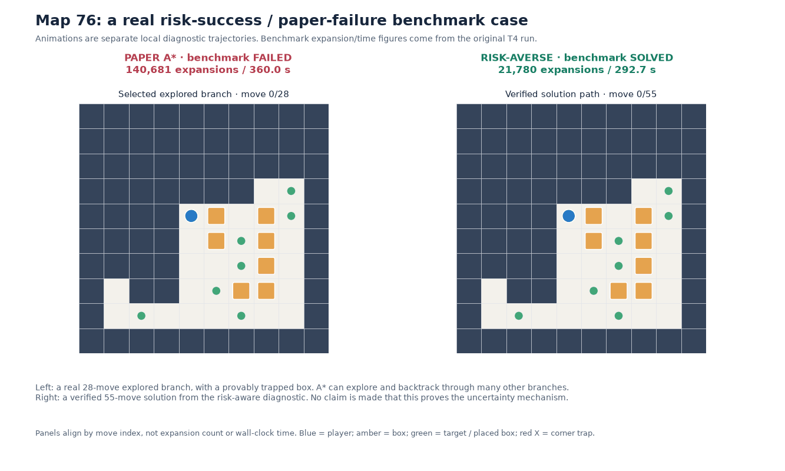
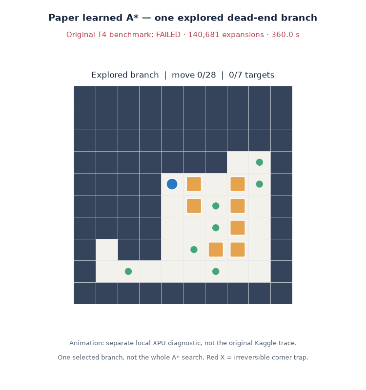
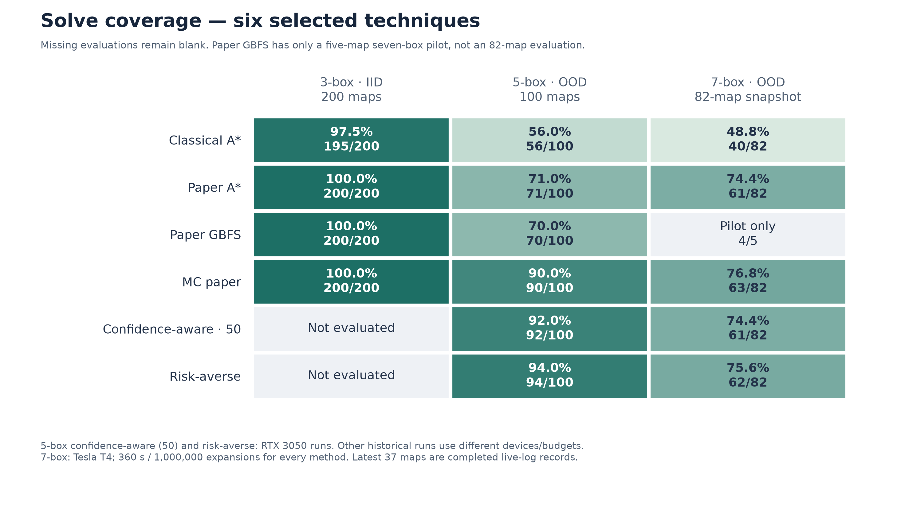
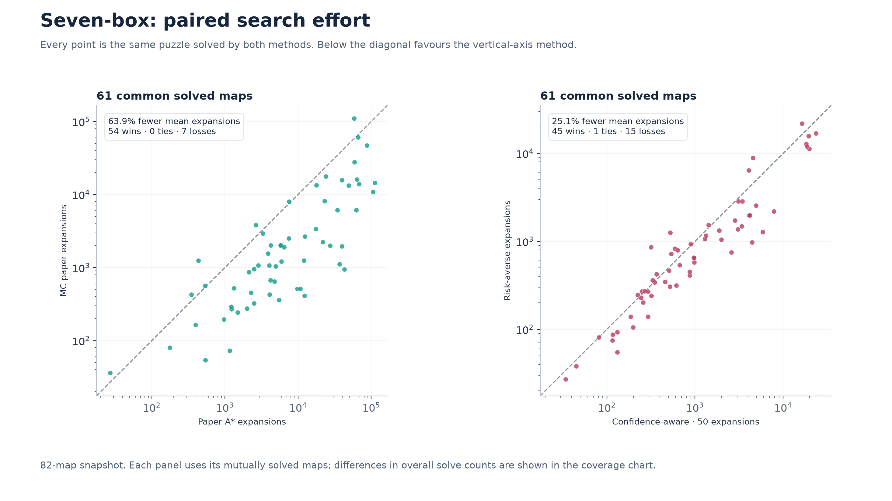
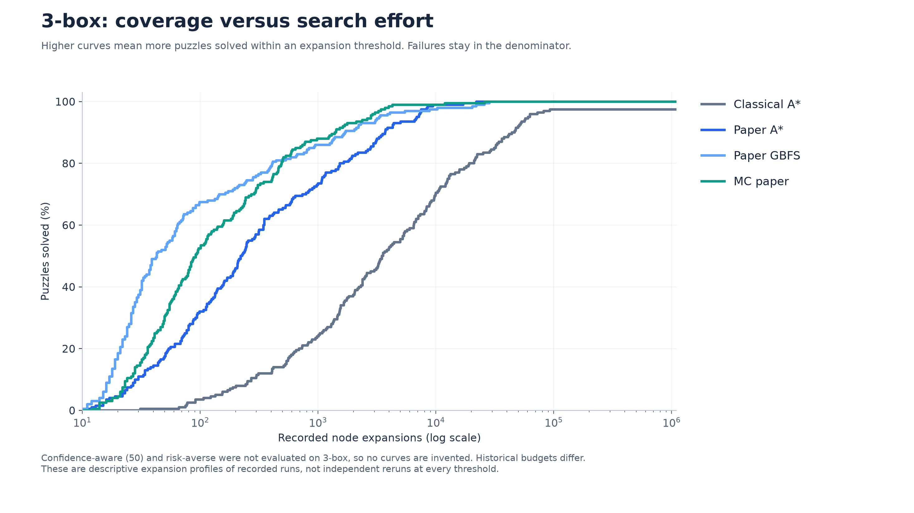
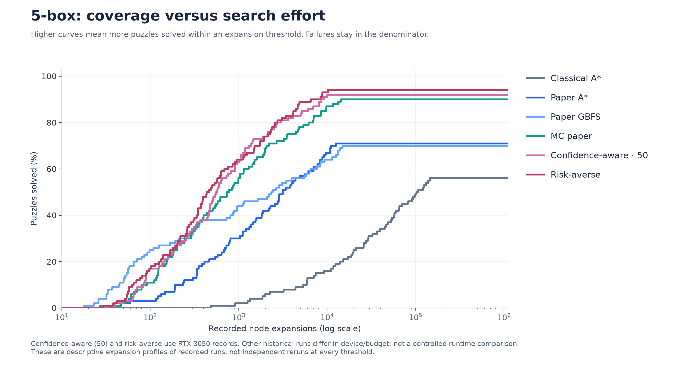
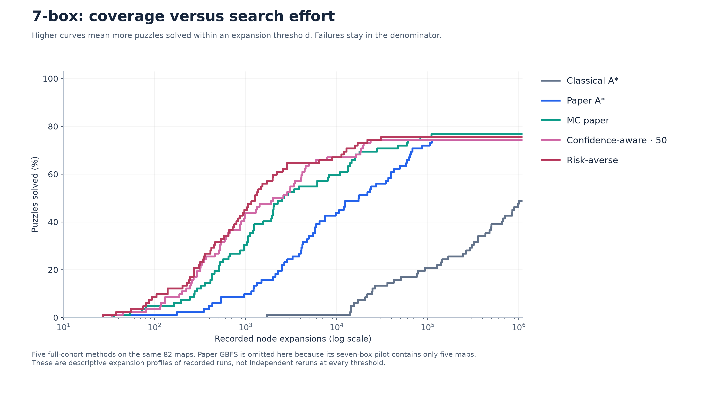
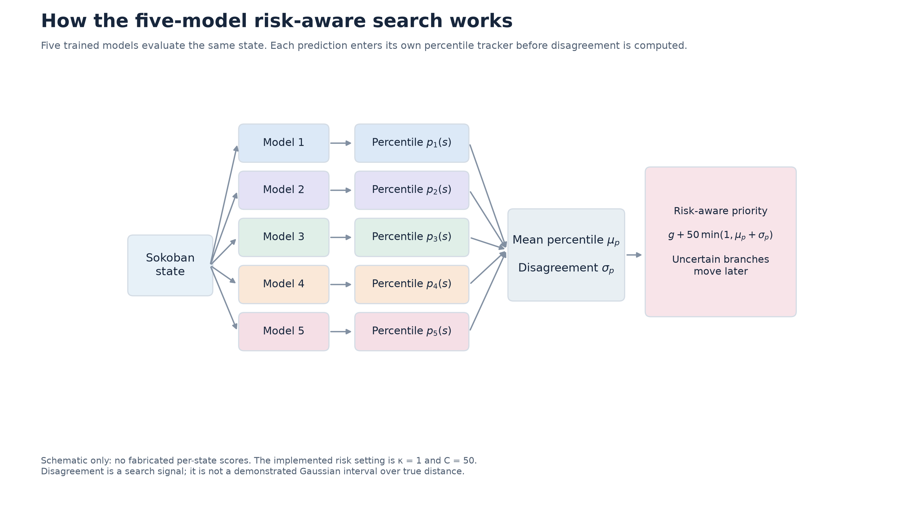
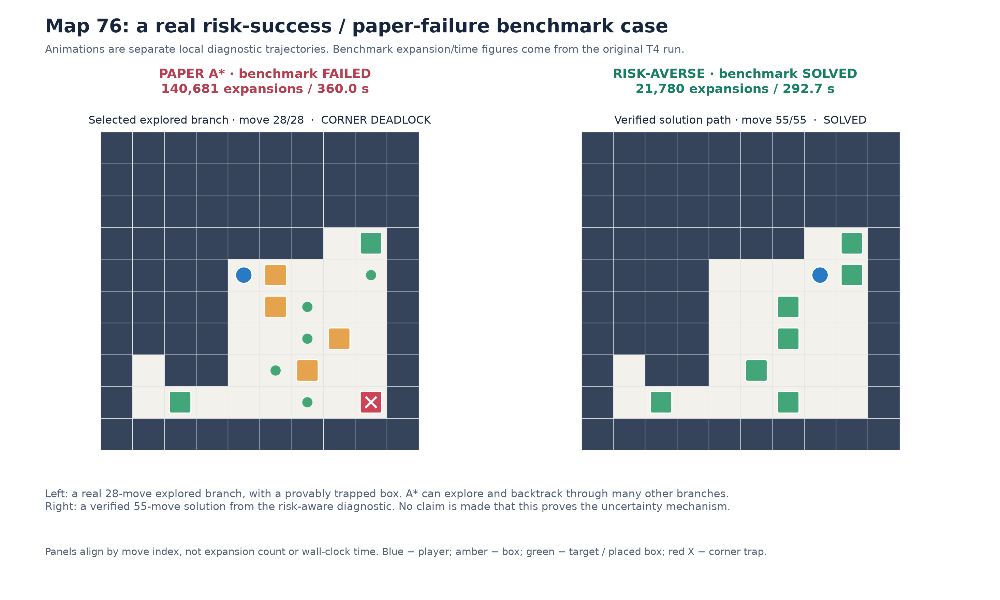

Original T4 benchmark: risk solved in 21,780 expansions / 292.7 s; Paper A* timed out at 140,681 expansions / 360 s. Animations: separate local diagnostic, not the original execution. Left is one actual explored branch; right is a verified solution. They are aligned by move count, not wall-clock time.


Red X marks a box trapped off-target between two orthogonal walls. This is a dead-end branch, not the whole search.
The requested six techniques only. The 5-box confidence-aware (50) curve uses the RTX 3050 repetition.

MC paper versus paper A*, and risk-averse versus confidence-aware (50).

Confidence-aware (50) and risk-averse were not evaluated on 3-box, so no curves are invented. Historical budgets differ.

Confidence-aware (50) and risk-averse use RTX 3050 records. Other historical runs differ in device/budget; not a controlled runtime comparison.

Five full-cohort methods on the same 82 maps. Paper GBFS is omitted here because its seven-box pilot contains only five maps.

The mean is an internal component of the retained risk/confidence formulas, not a separately evaluated technique.

Original benchmark counts; separately captured local diagnostic trajectories. The left panel is one explored dead-end branch.

Full provenance, limitations and suggested slide caption: README. Click a static figure for its editable SVG.